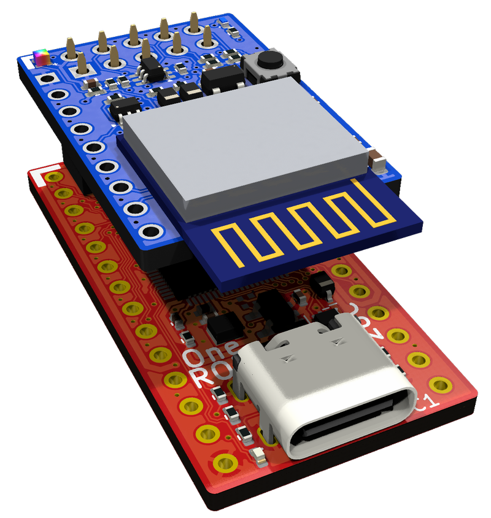
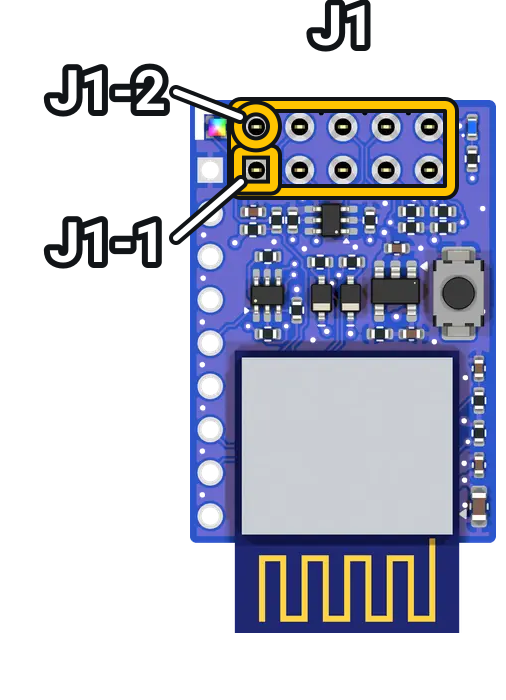

Getting started
Most Airfrogs are sold with the firmware pre-installed. Commission an Airfrog without firmware and then:
1Microcontroller board
Follow the steps for your board.
One ROM Fire
One ROM is the most flexible ROM replacement for your retro system.
Plug Airfrog onto the One ROM header, with the Airfrog antenna above the ROM body.
Warning: plugging Airfrog into One ROM the wrong way round can damage both devices.
Airfrog automatically detects a connected One ROM.

Other boards
Connect Airfrog to the board with jumper wires:
| J1 pin | Pico | Pico 2 | Blue Pill | Black Pill |
|---|---|---|---|---|
| 1 | GND | GND | GND | GND |
| 2 | VSYS | VSYS | 5 V | 5 V |
| 3 | SWDIO | SWDIO | SWDIO | SWDIO |
| 4 | RUN | RUN | NRST | NRST |
| 5 | SWCLK | SWCLK | SWCLK | SWCLK |
| 6 | BOOTSEL test point | BOOTSEL test point |
Choose the board in Airfrog's Target settings once Airfrog is on your network.

2WiFi network
- Power the board Airfrog is attached to, which in turn powers Airfrog.
- Wait a few seconds, then join
airfrog-XXXXfrom a phone or computer. The default password isairfrogx. - Open http://192.168.4.1/. Many devices open the page automatically when they connect.
- Enter your WiFi network credentials and select
Save and connect.
Airfrog joins your network and the page displays Airfrog's IP address.
3Airfrog home page
- Disconnect from Airfrog and re-join your own network.
- Open the Airfrog home page at http://airfrog.local/, or at Airfrog's IP address.
Problems
If airfrog-XXXX doesn't appear or you can't connect to Airfrog, see
Recovery.